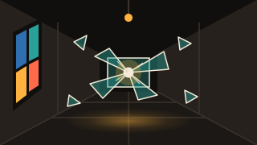
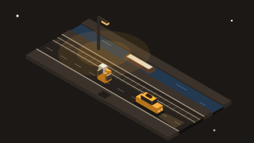
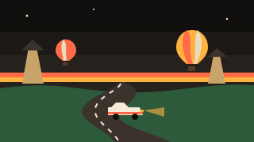

Mini Golf Türkiye
Topa dokun, geri çek ve bırak
Nasıl oynanır?
Kapadokya'dan Nemrut'a dokuz delikli bir gece turu. Topa dokun, parmağını ya da fareni vurmak istediğin yönün tersine doğru geri çek ve bırak: ne kadar çekersen o kadar sert vurursun. Kesikli çizgi yönü, topun yanındaki çubuk gücü gösterir. Topun uzağında sürüklemek kamerayı topun çevresinde döndürür, katman düğmesi bütün deliği üstten gösterir. Her deliğin bir par değeri var: par'dan bir eksikte bitirmek Birdie, bir fazlası Bogey sayılır. Peribacaları, Efes sütunları ve Nemrut başları topu sektirir; Pamukkale'nin sığ suyu ve kum topu yavaşlatır; Galata yokuşunu çıkmak için güç gerekir. Kız Kulesi'nde suya düşen top bir ceza vuruşuyla son yerine döner; vapuru bekle, köprü olduğunda geç. Bir delikte en fazla on vuruş atabilirsin. Deliği bitirdikçe sıradaki açılır, en iyi skorların yalnızca bu cihazda saklanır.
Benzer oyunlar
-

AksiyonCam Ustası
Gece cam atölyesinde 3D koridor: dokun, bilye fırlat, camları kır. Çeşmibülbül camları, kayan paneller, kombo atışlar ve kırılmaması gereken nazar boncuğu kapıları.
-

AksiyonGece Yarısı Karşıdan Karşıya
Gece İstanbul sokaklarında 3D sonsuz zıplama: taksi, dolmuş ve tramvaydan kaç, Boğaz vapurlarına bin, simit topla, martı ve kedi aç.
-

YarışKapadokya Yolları
Gün batımında peribacaları arasında 3D sürüş. Sonsuz serbest yol, günlük ralli parkuru, kontrol noktaları ve kendi rekorunla yarışan hayalet araba.